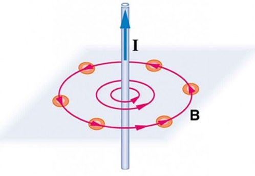

28 Sep 23 - Activity: Superposition of Fields#
Coulomb’s Law#
We’ve seen that the electric field of a set of point charges if given by the vector sum of the contributions from each charge:
where \(\mathbf{r}'_i\) is the location of the charge relative to the origin, and \(\mathbf{r}\) is the location of the field point relative to the origin. This net electric field is the result of the superposition of the electric fields from each charge. But here the charges are discrete, we can identify each charge uniquely in terms of it’s charge and location. This concept can be abstracted to a continuous distribution of charge, where we can identify the charge at any point in space by the charge density \(\rho(\mathbf{r})\). In this case, the charge is not a point charge, but rather a small chunk of charge that we model as a point charge. That is, we can write the electric field contributed by that chunk \(dq\) as:
where we have treated the chunk as a point charge. In the generic case, that chunk is given by \(dq = \rho(\mathbf{r})dV\) so that,
The net electric field is then given by the integral over the entire charge distribution:
This gives a general prescription for finding the electric field in most situations (i.e., where the integral converges). But this appraoch is only analytically tractable in situations where we are able to find anti-derivatives of the integrands that we construct. There are many, many techniques to evaluating tricky integrals. But in the end, we often turn to technologies like Mathematica, Wolfram Alpha, or SageMath to do the heavy lifting for us. Numerical methods are also very useful, and we already used a solver for 2D problems.
Activity: Ring of Charge#
Consider the ring (radius, \(R\)) with a uniform linear charge density \(\lambda = \frac{Q}{2\pi R}\). that is placed with it’s center on the plane as shown below.

✅ Do this
Write an expression for the contribution of an arbitrary charge element to the electric field at the location shown \(\mathbf{r} = \langle 0,0,z \rangle\). What is charge density and what is the charge element?
Rewrite the expression as an integral over the relevant charge distribution. What are the limits of integration?
(if you want) Use a symbolic integrator to evaluate the integral. What is the electric field at the location shown? (You can use Wolfram Alpha or try Python’s own symbolic toolkit SymPy)
import numpy as np
import matplotlib.pyplot as plt
## your code to plot the electric field expression
Magnetostatic Analogs#
As we discussed earlier, a magnetostatic situation is described using the following PDEs:
where \(\mathbf{J}\) is the current density.
Biot-Savart Law#
There is a solution to these equations that is analogous to the Coulomb’s Law solution for the electric field. This solution is called the Biot-Savart Law. The contribution of a little chunk of current at a location \(\mathbf{r}'\) to the magnetic field at a location \(\mathbf{r}\) is given by:
where \(I\) is the current in the chunk of wire \(d\mathbf{l}\) and \(\mathbf{r}-\mathbf{r}'\) is the vector from the chunk to the field point. The net magnetic field is then given by the integral over the entire current distribution:
This full form of the Biot-Savart Law suffers from the some of the same challenges that we see with the full form of Coloumb’s Law. It can only be computed directly if we can form integrals that we can perform analytically. Otherwise it can form the basis for other approaches. Typically, we use the Biot-Savart Law to compute the magnetic field for a steady current and for geometries that have a high degree of symmetry. The most common case is a thin wire with a steady, constant current \(I\). Then the full form simplifies to the line integral:
where \(d\mathbf{l}\) is the vector element of the wire. This is the form that you are likely to use most often.
Ampere’s Law#
Ampere’s Law uses the curl equation for \(\mathbf{B}\) and Stokes’ theorem to produce a line integral that can be used to solve for the magnetic field. We can derive this quickly:
where \(I_{enc}\) is the current enclosed by the path of integration. This integral is always true, but like Gauss’’s Law, it is not useful unless there’s a high degree of symmetry.
A thin wire#
The example of a thin wire is common and forms the basis for more complex forms of Ampere’s Law. Consider a thin wire with a steady current \(I\). We are a distance \(r\) from the wire. We know the magnetic field circulates around the wire, so we choose a circular path a distance \(r\) from the wire.

In this case the (as of yet uncomputed) magnetic field is always parallel to out choice of path. Moerover, we have no reason to believe the magnetic field strength is different at different locations along the circle. So the integral simplifies:
where \(B\) is the magnitude of the magnetic field. The total current is just \(I\) so that,
where \(\hat{\phi}\) is the unit vector in the azimuthal direction – around the wire.
A thick wire#
Consider a thick wire (radius \(a\)) that has a steady current density \(\mathbf{J}(\mathbf{r}) = J_0 \hat{z}\) where \(J_0\) is some constant. See the figure below.
✅ Do this
Use Ampere’s Law to find the magnetic field inside and outside the wire.
Change the current density to \(\mathbf{J}(\mathbf{r}) = J_0 \frac{r^2}{a^2} \hat{z}\) and find the field again. How do the fields outside compare between case \(\mathbf{J}(\mathbf{r}) = J_0 \hat{z}\) and this one.
How could you write the current density so that it only appears on the surface of the thick wire? (Hint: look into Dirac delta functions.)
Can you use Ampere’s Law if the current density in the wire were \(\mathbf{J}(\mathbf{r}) = \sigma_0 \delta(r-a) \hat{z} \)? Why or why not? What does that current distribution look like?
Can you use Ampere’s Law if the current density in the wire were \(\mathbf{J}(\mathbf{r}) = J_0\frac{r}{a} \hat{\phi}\)? Why or why not? What does that current distribution look like?
Can you use Ampere’s Law if the current density in the wire were \(\mathbf{J}(\mathbf{r}) = \sigma_0 \delta(r-a) \hat{\phi}\)? Why or why not? What does that current distribution look like?